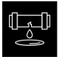
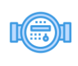

Gérer sa consommation d'eau
Gérer ses factures
 Fuite d'eau
 Gérer son compteur d'eau
Comment réduire ma consommation d’eau ?
- Cherchez les fuites. Pour trouver celles qui ne sont pas visibles, fermez bien tous les robinets et relevez les chiffres en noir sur le compteur d'eau le soir avant de vous coucher. Le lendemain matin, vérifiez si le compteur a tourné pendant la nuit. Si c’est le cas, vous avez une fuite ! A raison d'une goutte perdue par seconde, vous perdez 17 litres par jour, alors faites réparer ou changez les joints.
- Choisir des matériels économes.
- Prendre une douche d'environ 3 minutes (50 litres) plutôt qu'un bain (150 litres).
- Fermer les robinets pendant le nettoyage des mains, brossage des dents, rasage...
- Arroser avec l'eau de lavage des légumes.
- Remplir complètement lave-linge et lave-vaisselle avant de les mettre en route ou utiliser la touche "éco".
Comment préserver la planète ?
- Porter les restes de peintures, solvants, huiles de vidange à la déchetterie. Ne jamais les verser dans l'évier, les toilettes ou l'égout !
- Ne pas jeter de médicaments dans les toilettes ou l'évier mais les ramener en pharmacie.
- Choisir des produits biodégradables pour nettoyer son logement et des lessives sans phosphates. De même, les voitures doivent être lavées en station de lavage, équipées pour traiter les eaux usées.
Existe-t-il des robinets qui permettent d'économiser l'eau ?
Les robinets mitigeurs sont conseillés pour économiser l'eau. Ils permettent
d'ouvrir
ou de fermer l'eau en régulant en même temps le débit et la température. Ainsi, vous n'avez plus
besoin de faire couler l'eau trop longtemps car vous obtenez rapidement la température et le
débit
souhaités. Il existe également des accessoires : les réducteurs de pression économisent l'eau en
régulant le débit. De plus, ils protègent l'installation des surpressions.
J’ai du mal à régler mes factures d’eau. Comment puis-je être aidé?
Si vous rencontrez des difficultés financières, n'hésitez pas à nous en parler,
nous
vous indiquerons les coordonnées du correspondant Solidarité.
Sur ma facture, à quoi correspond la rubrique “distribution de l’eau ”?
La part « distribution de l'eau » correspond aux opérations liées à la production
et
à la distribution de l'eau potable, c'est-à-dire le captage, le traitement, le contrôle, le
stockage
de l'eau ainsi que l'entretien des réseaux et le service client.
Sur ma facture, à quoi correspond la rubrique “collecte/ traitement des eaux
ussées”?
La part « collecte et traitement des eaux usées » correspond à la récupération de
vos
eaux usées dans les réseaux de collecte puis leur dépollution dans les stations d'épuration. Une
fois dépolluées, les eaux peuvent être rendues au milieu naturel.
Sur ma facture, à quoi correspond la rubrique “modernisation des réseaux de
collecte”?
En application de la loi sur l'Eau du 30 décembre 2006, les factures distinguent
la
redevance « lutte contre la pollution des eaux » qui concerne tous les abonnés de l'eau potable
et
celle de « modernisation des réseaux de collecte » qui ne concerne que les abonnés raccordés au
réseau d'assainissement collectif.
Sur ma facture, à quoi correspond la rubrique “organismes publics” ?
La part « organismes publics » correspond aux taxes et redevances destinées aux
organismes publics chargés de la préservation de la ressource en eau et/ou du financement
d'équipements d'alimentation en eau potable ou de protection du milieu naturel. Parmi ces
organismes
figurent l'Agence de l'Eau dont dépend votre commune.
Sur ma facture, à quoi correspond la part fixe ou l'abonnement?
La part fixe, c'est votre abonnement au service de l'eau et/ ou de
l'assainissement.
Et votre abonnement, c'est l'accès au service de l'eau. Quelle que soit votre consommation, il
faut
relever les compteurs, entretenir les installations (réseau, canalisations, réservoirs, châteaux
d'eau, usines de traitement d'eau potable, usines de dépollution d'eaux usées), facturer,
contrôler
la qualité de l'eau, etc. Le montant de l'abonnement prend en compte une part de ces coûts. Il
varie
selon le diamètre du compteur et du branchement.
Je sais que j’ai une fuite d’eau chez moi mais elle n’est pas visible. Comment
faire
pour la localiser?
Vérifiez d'abord l'étanchéité des joints, soudures et tuyaux de votre
installation.
Inspectez aussi le système mécanique de vos appareils (chasse d'eau, lave-linge, lave-vaisselle,
clapet du cumulus') et vérifiez la fermeture de vos robinets et purges de radiateurs. Vous
pouvez
également utiliser du papier absorbant (essuie-tout) et longer tous vos tuyaux : s'il devient
humide, vous avez localisé la fuite. Les fuites les plus difficiles à détecter sont le plus
souvent
situées au niveau des murs ou dans les canalisations enterrées. Si c'est le cas, nous vous
invitons
à faire appel au plombier de votre choix.
Loi Warsman : Qu’est-ce que c’est?
-
Depuis le 1er juillet 2013, la loi Warsmann protège l'ensemble des consommateurs qui sont
abonnés au service des eaux, en cas de fuite sur leurs canalisations d'eau privatives,
contre les factures d'eau trop importantes. Elle oblige le distributeur d'eau à avertir
son
client en cas de consommation anormale d'eau, au plus tard au moment de l'envoi de la
facture, et permet de limiter le montant dû. Si vous vous retrouvez dans ce contexte,
vous
n'êtes alors pas tenu au paiement de la part de votre consommation qui excède le double
de
votre consommation moyenne. Mais pour pouvoir en bénéficier, il va vous falloir répondre
à
certaines conditions. Pour pouvoir profiter des avantages de la Loi Warsmann, il vous
suffit
de remplir les quatre conditions suivantes :
- 1. Vous devez être un particulier, et votre facture doit concerner un local d'habitation.
- 2. La fuite d'eau responsable de votre surconsommation doit être située sur une canalisation d'eau potable privative
- 3. Dès que vous êtes informé de votre consommation anormale d'eau, vous devez faire réparer la fuite par un plombier professionnel.
- 4. Dans un délai d'un mois suivant l'information qui vous a été faite par votre distributeur d'eau, vous devez obligatoirement lui fournir l'attestation de l'entreprise de plomberie qui a effectué la réparation. Sur cette attestation devra figurer la date de réparation de la fuite ainsi que sa localisation.
Comment lire mon compteur?
Votre consommation d’eau est indiquée en m³ (1m³ = 1000 litres). Ce sont les
chiffres
en haut à gauche qui sont relevés pour votre facture. Les chiffres de droite correspondent aux
unités inférieures au mètre cube et ne sont pas pris en considération pour l’établissement de
votre
facture. Les m³ sont en blanc sur fond noir. Les litres sont en blanc sur fonds rouge. Lorsque
la
molette tourne, il y a un passage d’eau, donc une consommation.
Je construis ma maison, quelles sont les démarches pour avoir de l’eau?
- Tout nouveau branchement devra faire l’objet d’une demande écrite auprès du service des Eaux.
- Le pétitionnaire devra remettre au service des Eaux un dossier complet, en trois exemplaires, conforme aux règlements de service et aux prescriptions techniques du service des Eaux.
- Le Service des Eaux établira alors un devis précisant les travaux qui seront pris en charge par le Service des Eaux qui précisera notamment les modalités de réalisation de ces travaux, les obligations du pétitionnaire et la limite de prestation du Service des Eaux.
- Dans tous les cas, tous les travaux mandatés directement par l’abonné devront être réalisés par une entreprise de Travaux Publics spécialisée dans l’eau potable. L’abonné devra fournir une attestation d’assurance de cette entreprise auprès du service des Eaux avant le début des travaux.
- Les travaux seront réalisés après acceptation du devis établi par le service des Eaux, indiquant le délai d’exécution des travaux, sous réserve de l’obtention préalable de l’ensemble des autorisations nécessaires.
- La mise en service du branchement est effectuée par les agents du service des Eaux, seuls habilités à manœuvrer les robinets de prise en charge sur la conduite de distribution.
Je viens d’emménager. Le branchement de l’eau est fermé. Que dois-je faire?
Nous suspendons le service de l'eau si le logement reste vacant, à la suite de la
résiliation d'un abonnement. Pour le rétablir, un technicien doit intervenir chez vous. Pour
cela,
il vous suffit de contacter la Régie des Eaux qui engagera une intervention sur place (avec un
rendez-vous si nécessaire ) pour qu'un technicien vienne ré-ouvrir le branchement d'eau.
Comment puis-je être sûr que le compteur fonctionne bien?
Pour vérifier que le compteur fonctionne bien, faites un test à l'aide d'un seau
gradué de 15 ou 20 litres : assurez-vous que tous les robinets sont bien fermés, puis remplissez
le
seau. La consommation indiquée sur votre compteur doit correspondre à la quantité versée dans
votre
seau.
Pourquoi change-t-on les compteurs?
Le compteur d'eau est un appareil de mesure qui sert à enregistrer le volume de
votre
consommation d'eau. Sa première qualité est d'être fiable. Mais après une quinzaine d'années,
cette
fiabilité peut être altérée selon le type de compteur et/ou selon la qualité de l'eau. Il est
alors
nécessaire de le remplacer. La régie prendra en charge le remplacement du compteur selon un plan
de
renouvellement.
Comment cela se passe si je suis absent lors du relevé de mon compteur d’eau?
Si notre technicien peut accéder au compteur, votre facture est établie sur la
base
de votre consommation réelle. Sinon, une estimation est réalisée en fonction de l'historique de
votre consommation. Dans ce cas, le technicien laisse une carte d'auto-relevé ou un avis de
passage
qu'il vous suffit de nous renvoyer complété, afin d'éviter une facture estimée. Le plus
pratique,
c'est de nous communiquer votre relevé de consommation en ligne. Pour cela, il vous suffit de
vous
rendre dans votre espace client.
Comment transmettre mon relevé de compteur ?
Vous pouvez transmettre votre relevé de compteur d'eau directement en ligne, à
tout
moment. C'est simple et pratique : il vous suffit d'avoir créé votre espace client et d'y avoir
enregistré votre abonnement.
J’ai entendu parler d’une nouvelle technique de relevé du compteur à distance.
Qu'est-ce que c’est?
La radiorelève est en effet un système moderne de relevé de compteur d'eau, qui
est
mis en place à l'initiative de la Régie des Eaux d’Aime. Elle permet la relève du compteur sans
intervention du technicien chez vous ce qui engendre un gain de temps pour vous et pour nous.
Je souhaite déplacer mon compteur. Comment dois-je procéder?
Les demandes de déplacement de compteurs doivent être effectuées par le
propriétaire
de l'habitation. Notre technicien intervient chez vous afin d'établir un devis gratuit. C'est au
propriétaire de prendre en charge les frais de déplacement du compteur.
Le remplacement du compteur est-il à ma charge?
Le remplacement du compteur est gratuit pour le consommateur. Seuls les
remplacements de compteurs dus à un incident relevant de la responsabilité du consommateur (gel
du
compteur, bris du compteur) peuvent lui être facturés.